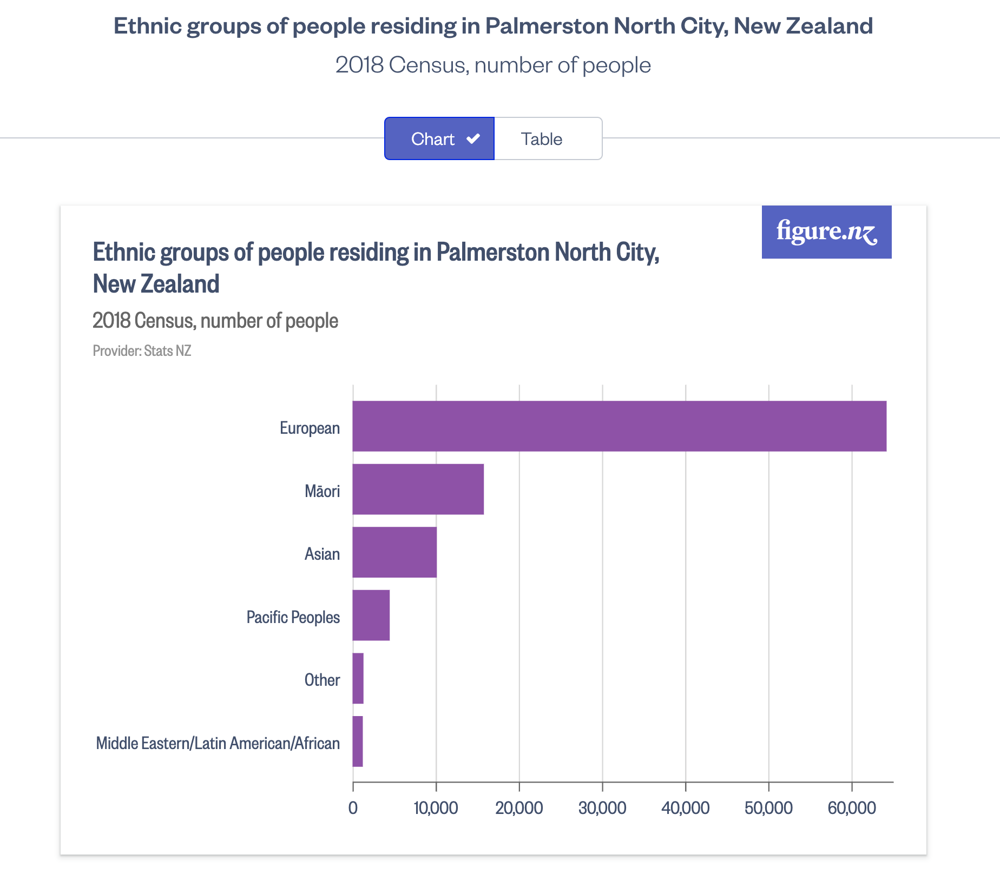

My Values + examples
My Core Values
- Determination: Half ironman
- Intelligence: I feel the most proud when this is complimented and the most hurt when it is criticised.
- Ethics: I took many ethics papers at uni. Love ethical discussions. Value ethics over outcome or reason for doing something.
- Growth: Always challenging myself. Degree, grad dip, this course, move to new cities alone.
- Empathy: Cry when watching animal docs, cry over the news, feel others’ pain.
- Practicality: Strong appreciation for things that are practical. Choose activities or sports for either challenge or practical application (e.g. martial arts as self-defense). Spend more on my desk than clothes.
- Logic: Have a strong dislike for illogical things. Get frustrated when people act illogically. I struggle with some of the names within coding as they dont make sense or correlate to what they do.
Example of ethical decision I had to make
In my previous job, I came across situations where I was expected to mislead the client for the benefit of our company, and while this is probably considered normal in a 'sales' role, it did not sit right with me.
An example of this is when we had work in development that clients were waiting for, but the timeframe for it kept blowing out. First it would be ready in september, then it was the next february, then april, then september again. We were told to inform the clients of the new release date, but we knew it would probably be blown out again.
Our clients had to plan their work around this release, so continuously misleading them was impacting their ability to manage work at their end, as well as hurting our relationship with them.
When I was asked outright by a client, will this be done by the new date and should they plan around that being when it is released, I felt stuck in the middle. I cared for our clients and didn't want to make things difficult for them, but I also felt a responsibility to adhere to what our boss had told us to say to the clients. What was I meant to do?
I told them the truth. No, they shouldn't plan around it being released at that time. Even though it was my job to stick to that date, and reassure them, my ethics told me otherwise. I had empathy for them, trying to organise their timeline and having been screwed around over and over again. They are people who are trying to do their job, just like I was. Logically, I didn't see the point in misleading them either. If my job is to have a good relationship with the clients, how would that be beneficial to me or to the company. The practical, logical, and ethical thing to do, in my eyes, was to be honest and allow the client to be informed while they planned the rest of their year.
The consequence was that they trusted me more and appreciated someone being honest with them. I also learned how they truly felt about the company and how being misled was impacting them. The biggest consequence was me finally deciding that I did not want to be in a role like that anymore.
My culture: New Zealand, in my experience, has an unfortunate culture of apathy and resistance to change.
I was born and raised in Palmerston North. It's not nearly as terrible as people think and its flaws are not what many would guess. For reference, below are the ethnicity results from the 2018 census:

To put this into perspective even further, I was in my primary school kapa haka. In fact, I was the manuhiri Kaikaranga for our Powhiris. The Kaikaranga, who performed the Kairanga for the side of the school, was also in musicals. Small details, but they paint a picture. However, the picture goes much deeper. Being fully European (or Pakeha) I often had the uncomfortable honour of hearing the opinions of the parents of my fellow Pakeha friends. It was strange to see people who had always treated me well speak so badly of others, people they didn't even know. I got all of the greatest including: Maori people being given too much special treatment, Maori people not working hard enough, Maori people asking for handouts, Maori people being on the benefit, Chinese people buying all of our land, and it goes on. Most were a passing comment, something they probably didn't realise they had said, but they all stuck with me and shaped how I viewed the people around me. The people who seemed lovely.
I spoke to my mother and brother about it and my brother said that he experienced the same. It was so bizarre to us because we weren't raised in a household like that. In fact, my mother was the person who would actively avoid the group of pakeha parents and stand with a parent who was alone, regardless of ethnicity. She grew up in severe poverty, around government housing, with friends of all ethnicities. To her, people are people, and so that's how we were raised. It seems simple, right?
For high school, I had decided to go to a lower decile co-ed school (my older brother went there already). Now the comments were replaced with comments about women. I have always been an observer, and found that letting people feel safe to share these opinion helped me to understand them better. Looking back it looks manipulative, but in reality I had severe anxiety and depression and was just trying not to make waves or get hurt. Growing up close to my brother meant that I often felt more comfortable with boys than girls initially, and I suppose I had an energy that felt less 'girly' and more 'one of the guys' to the boys around me. My new uncomfortable honour was to hear the boys around me disrespect women. Suddenly we were all too emotional, overreacting, annoying, dumb, pink was terrible, being girly was bad… to put it simply, girls were lesser. I wish I could say that I put those boys in their place. I wish I could say that it made me embrace my feminity and value female friendships over the ones I had with males. I wish I had gone to the all-girls school after all. What really happened, was that I did not only start to agree with them, but I also began to perform a 'one of the boys' type of femininity. I began to hate the girly parts of myself.
Later in high school, I gained an amazing best friend. She is Japanese and is still one of the most amazing people I've ever had the pleasure of meeting. She doesn't know, but she changed who I am forever. She was the first female I had developed a strong bond with since primary school, and the first who I had developed that strong of a bond with pretty much ever. We had one of those movie friendships, I was the taller and negative one while she was tiny and pure sunshine. We had an anniversary, we made each other elaborate presents, I would climb in her window as a shortcut when I came over, I was told to park on their front lawn unless it was raining, I went to dinner with them and her grandfather and cousin when they were visiting, I basically became part of her family. One day, we were walking through the mall and someone went right up to her and told her to go back to where she came from. I was in shock. I was furious. Bewildered. Yet, she wasn't fazed. That moment was a key moment in my life. I could almost feel a key turn in my brain and a door open. None of it was harmless. The comments behind closed doors, the jokes, all of it. It all reinforced beliefs in people's heads. It created narratives and told people what to think.
When the people around you don't say anything, you can assume they agree with you. When no one steps in, you think it's fine. When the only people complaining are the ones you're looking down on, it doesn't hold much weight. It is the people who they consider 'safe' who need to disagree. Apathy is an ally to those who wish to do harm and it applies to basically anything.
If a person says something bigotted to me in a forest, and no one else is around to hear it, does it still cause damage?
Yes. I believe it does.
I'm not perfect, but I try my best to be open-minded, empathetic, and to stand by my values.
Strengths/Limitations